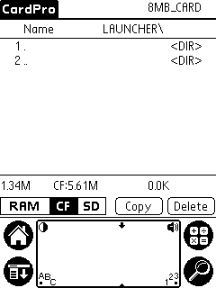
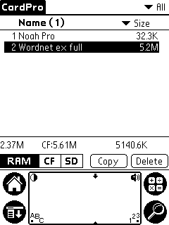
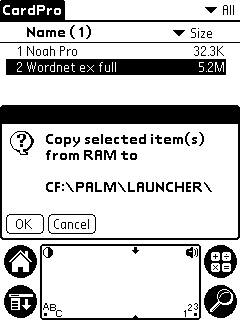
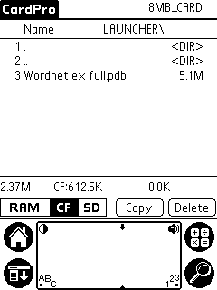

To install Noah Pro make sure that you (temporarily) have 5200 K of free internal memory on your PDA (read how to do it).
Install the following files on your device:
Noah should find the database on the external memory card upon startup.
Launch Palm Desktop application and press "Install" button on the left (
 )
)
On the windows that appears, press "Add..." button, then navigate to the folder where you unpacked Noah. Select "noah_pro" and press "Open" button in the file dialog.
Press "Add" button again, navigate to "db_ex" director, select "wn_full_ex.pdb" and press "Open" button.
Press "Done" button:
You'll see the final confirmation, press "OK" button and do a Hot Sync.
|  |
Using CardPro application to an extension memory card (either CF or SD).
Make sure that you have at least 5.1 M of free space. Navigate to "\PALM\LAUNCHER" folder
as shown on the left. Note: you must
use "\PALM\LAUNCHER" folder, otherwise Noah won't find the database.
|
|  | Switch to internal memory view, find "Wordnet ex full" file, tap on it to mark and press "Copy" button. |
|  | CardPro will copy the database from internal to external memory. |
|  | Switch again to extension memory card view to verify that the database has been copied. You can delete the database from internal memory. |
Noah should now find and use the database on HandEra external memory card.